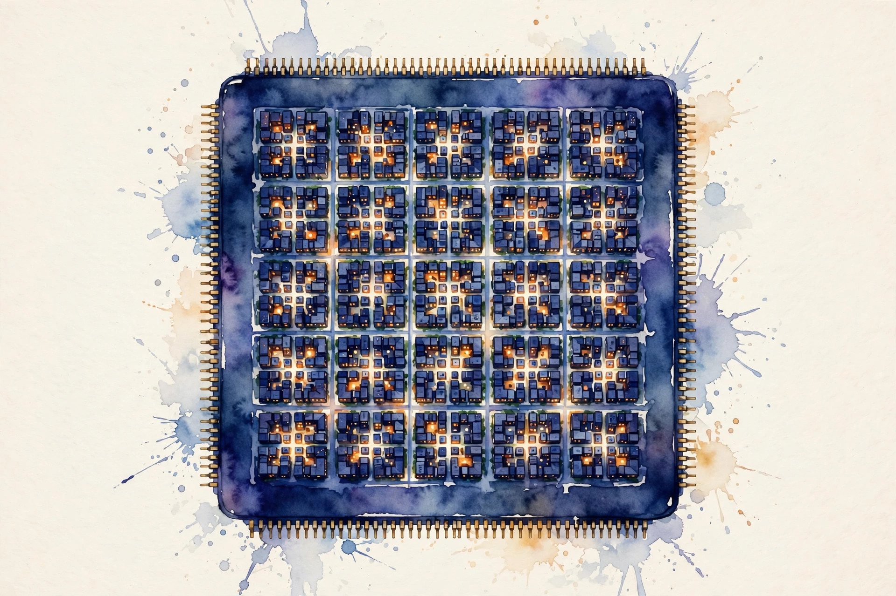

Companion · narrated from the lesson document
Peak numbers are ceilings under ideal conditions. This companion walks the hardware unit: the execution hierarchy, the memory pyramid, the roofline on one reference device, occupancy, honest measurement, GEMM shapes, MFU, interconnects, narrow formats, throttling, and the invariants that catch lying profilers.
From the lesson The idea, and every number beside it, comes from the cited section of u06_gpu_tpu.md. The phrasing is the companion's.
Illustration Invented by the companion: an analogy, a toy with made-up values, or a what-if. Never lecture content.
companion Companion voice: the idea above the tag is from the lesson. The generalization below it is the companion's.
Provenance: no full lecture transcript exists for this session. The page narrates the lesson document content/v2/cs336/lessons/u06_gpu_tpu.md, not a video. Claim class: REQUESTED-BRANCH. The lesson states its reference device (312 TFLOP/s bf16 dense, 2.0 TB/s HBM, 80 GB, 108 SMs) as a standing assumption, not a sourced claim. Every number carries the lesson section that reports it.

Section 1 · Remediation, standing assumptions
From the lessonRemediation
Latency is the time for one operation. Bandwidth is bytes per second. Throughput is operations per second. A kernel is memory-bound when its arithmetic intensity (FLOP per byte) is below peak-FLOP/bandwidth. It is compute-bound above it. The roofline model plots attainable throughput as min(peak, intensity * bandwidth).
From the lessonStanding assumptions, remediation
All compute in this unit uses one reference device, stated by the lesson as an assumption, not a sourced claim: peak bf16 dense 312 TFLOP/s, HBM bandwidth 2.0 TB/s, HBM 80 GB, 108 SMs. The worked check: intensity 1.0 FLOP/byte on the reference device gives min(312, 1.0 * 2.0) = 2.0 TFLOP/s, which is 1 percent of peak. From visuals/compute_u06.py, executed 2026-10-06.
From the lessonRemediation, C03 §5 Roofline toy on the reference device. Give an intensity, get the attainable throughput and the bound.
Intensity (FLOP/byte)
Press the button.
Attainable = min(312, intensity * 2.0) TFLOP/s. Knee at 312 / 2.0 = 156 FLOP/byte (C03 §3).
Section 2 · C01
From the lessonC01 §2, §3, §5
What runs where? A GPU has SMs. Each SM runs thread blocks. Blocks split into warps of 32 threads that execute in lockstep. Occupancy is the fraction of the SM's thread capacity that is active: latency hiding needs enough warps to cover memory stalls. Active threads = threads/block * blocks/SM * SMs. Occupancy = active / max threads per SM. More warps per SM means more independent work to schedule during a stall.
From the lessonC01 §6
The lesson's toy on the reference device, executed 2026-10-06: 256 threads/block, 8 blocks/SM, 108 SMs = 221,184 active threads (2.0K per SM).
One block of 32 threads on a 108-SM device leaves 107 SMs idle.
From the lessonC01 §10
The hierarchy is the GPU's answer to latency: CPU threads are few and heavy, GPU threads many and light.
Section 3 · C02
From the lessonC02 §2, §3, §5
Why not keep everything in registers? Registers are the fastest and hold kilobytes per thread: the working set. Shared memory (tens of KB per block) is programmer-managed scratch. HBM (80 GB, 2 TB/s) holds the model and the cache. On TPU: HBM plus on-chip vector/matrix units with software-managed memory. Every byte the kernel touches must travel HBM to L2 to shared/registers. Arithmetic intensity measures how much math amortizes each byte moved. The hierarchy rewards reuse (tiling, U07).
From the lessonC02 §6, §9
The lesson's capacity check, executed 2026-10-06: at 65,536 bytes per KV token (GQA-8, d=2048, L=32, bf16), 80 GB of HBM holds 1,220,703 tokens. HBM capacity bounds context length (U04-C01). HBM bandwidth bounds decode speed.
Register spilling: too many live values push registers to slow local memory, and the kernel slows 2 to 5x with no code change except variable count.
Section 4 · C03
From the lessonC03 §2, §3, §5
Is this kernel slow because of math or memory? Attainable = min(peak FLOP/s, intensity * bandwidth). The knee is at peak/bandwidth = 156 FLOP/byte on the reference device. Below the knee, only bandwidth matters. Above it, only math. Time >= max(FLOP/peak, bytes/bw), so throughput <= min(peak, intensity*bw). The U02 intensities plug straight in.
From the lessonC03 §6
The lesson's classification, executed 2026-10-06: attention scores at intensity 1.0 reach 2.0 TFLOP/s, memory-bound, 1 percent of peak. GEMM at 170.7 reaches 312 TFLOP/s, compute-bound, 100 percent of peak. The model is free and predicts within about 2x before any profiling.
visuals/compute_u06.py, executed 2026-10-06.A kernel at 50 percent of roofline with intensity 200 reads as compute-bound, but the real limit can be occupancy or instruction overhead.
From the lessonC03 §10
Full simulation is accurate and expensive. The roofline is the first-pass tool.
Section 5 · C04, C05
From the lessonC04 §2, §3, §5
The math says 312 TFLOP/s but the kernel gets 150. Why? Memory loads take hundreds of cycles. The SM hides this by switching to other warps. Occupancy is the fraction of maximum warps resident. Low occupancy means stalls with no warp to switch to. Little's-law style: needed warps ≈ latency * throughput. Fewer resident warps than needed leaves bandwidth idle. The lesson's toy: halving active warps halves the latency-hiding ability, and memory stalls go uncovered.
From the lessonC04 §11
The limit in the other direction: 100 percent occupancy with low intensity is still memory-bound. Occupancy cannot fix a bandwidth limit. The assumption "more occupancy is always better" breaks: past enough warps there is no gain.
From the lessonC05 §2, §3, §5, §6
The first timing says 10 ms, the second says 3 ms. Which is right? GPUs execute asynchronously: time with device sync, warm up (caches, clocks), then take the median of many runs. Report the setup (shapes, dtype, device state) or the number is meaningless. Async launch returns before the work finishes: unsynced timing measures launch overhead. Warmup fills caches and ramps clocks. Median rejects outliers. The lab model: run times [12, 3.1, 3.0, 3.2, 3.1] ms. The first is warmup, the median of the rest is 3.1 ms.
Timing without sync: every kernel reports about 5 us, and the "optimization" that launches fewer kernels looks like a win.
From the lessonC05 §9, §10
Minutes of benchmarking save days of wrong tuning. Vendor profilers (nsys, ncu) give the inside view. The warmup/sync/median rules are the floor.
Section 6 · C06
From the lessonC06 §2, §3, §5
Same FLOPs, different speed. Why? GEMM efficiency depends on the (M, N, K) shape: large K gives reuse, tiny M (decode, batch 1) gives none. Batching (bigger M) moves decode toward the compute-bound regime. Intensity ≈ 2MNK over the byte traffic: for M=1 this collapses, and the weight matrix streams once per token. The lab compares intensity for (M=1, N=4096, K=4096) versus (M=4096, N=4096, K=4096): the roofline classifies them on opposite sides.
From the lessonC06 §9, §10, §11
Batching costs latency per request (queueing) and buys throughput. The alternative: weight-only quantization raises intensity by shrinking bytes. Batching is the scheduling answer. The trap: batching to M=1024 on a latency-sensitive serving task makes throughput soar while p99 latency violates the SLO. The assumption "bigger is better" breaks against the latency contract.
Throughput and latency are different contracts. Batching serves one and can violate the other.
Section 7 · C07
From the lessonC07 §2, §3, §5, §6
The cluster trains at 25 TFLOP/s per GPU. Is that good? MFU = achieved model FLOPs / peak device FLOPs. The numerator counts the math the model needs (2 * params per token). The denominator is the device peak. The lesson's toy, executed 2026-10-06: 25.2 TFLOP/s on a 7B model at 1800 tok/s = 8.1 percent MFU. Achieved = 2 * P * tokens/s. 8 percent is poor. 40 to 60 percent is a well-tuned large run. MFU excludes rematerialization and communication: hardware FLOP utilization (HFU) includes them.
visuals/compute_u06.py, executed 2026-10-06.MFU 55 percent with frequent checkpoint restarts looks healthy while the run wastes a third of its wall clock.
From the lessonC07 §9, §10
MFU is a diagnostic, not a knob. The knobs are batch, parallelism, kernels. Alternatives: HFU (includes extra FLOPs), tokens/s alone (not normalized). MFU compares across hardware.
Section 8 · C08
From the lessonC08 §2, §3, §5
How long does a 7B gradient sync take? GPUs connect in tiers: fast inside the node (hundreds of GB/s), slower across nodes (tens to hundreds of GB/s). Ring all-reduce moves about 2x the data per GPU. Time ≈ 2 * bytes / bandwidth. Each of N GPUs sends and receives 2*(N-1)/N * bytes, ≈ 2*bytes.
From the lessonC08 §6, §9
The lesson's toy, executed 2026-10-06: about 0.02 s over 600 GB/s links, about 0.07 s over 200 GB/s links, for 7 GB in the ring model with 2x data. Communication time competes with compute. Overlap (U08/U09) hides it. Tree all-reduce gives lower latency with the same bandwidth term. Ring is the bandwidth-optimal baseline.
visuals/compute_u06.py, executed 2026-10-06.From the lessonC08 §5 All-reduce toy. Give bytes and link bandwidth. The toy runs the lesson's ring model.
Bytes (GB) Bandwidth (GB/s)
Press the button.
Time ≈ 2 * bytes / bandwidth (ring model, C08 §5).
A topology-unaware mapping puts heavy pairs across the slow tier, and the 0.07 s becomes the step's critical path.
Section 9 · C09, C10, C11
From the lessonC09 §2, §3, §5
The vendor says 624 TFLOP/s. Do you get it? Peak numbers are ceilings under ideal conditions: dense math, supported dtype, large shapes, sometimes structured sparsity. Your kernel's roofline (C03) is the honest comparison, not the vendor peak. The verification protocol: (1) quote the claim with its conditions, (2) reproduce the conditions or state the deviation, (3) measure per C05, (4) report achieved versus claimed with the gap explained. The lab: the fp8 624 number needs fp8 dense GEMM at large shapes. A skinny fp8 kernel achieves a fraction. An hour of verification beats a week of tuning to a phantom target.
From the lessonC10 §2, §3, §5, §6
What does fp8 buy? The lesson's toy, executed 2026-10-06: 624 vs 312 TFLOP/s dense (2x), and half the memory traffic of bf16. Newer devices add narrow formats with 2x the dense throughput of bf16 and half the bytes. Halving bytes doubles intensity at fixed FLOPs: memory-bound kernels speed up even before the 2x math rate matters. The catch: range and precision need scaling (per-tensor or per-block), and the kernels must exist. fp8 without scaling on a model with outlier activations overflows and the loss diverges. The assumption "narrower is a free lunch" breaks. Scaling is part of the format.
From the lessonC11 §2, §3, §5, §6
The kernel slowed down overnight with no code change. Devices cap power and temperature by lowering clocks. A throttled device reports the same kernel at lower throughput: timings drift and comparisons lie. Throughput scales with clock for compute-bound kernels: 1.0/1.4 = 0.71, a 29 percent hit. The lab models the clock drop from 1.4 GHz to 1.0 GHz and its 29 percent throughput hit, with the detection rule: repeated baseline timing drifting down. Blaming the code for a throttled slowdown means a week of tuning against a moving target. The assumption "the device is constant" breaks. Measure the device first.
Tuning a memory-bound kernel against the dense peak spends months of work on a ceiling the kernel can never touch.
From the lessonC09 §10, C10 §10, C11 §10
Third-party benchmarks get the same protocol. Format selection: bf16 is the safe default, int8 for inference, fp8 for training throughput where supported. Power-capped scheduling is the cluster-level answer. Detection is the user-level answer.
Section 10 · C12, synthesis
From the lessonC12 §2, §3, §5, §6
The profiler says the kernel beats the roofline. Now what? Three invariants: (1) throughput <= roofline, (2) the profiled FLOP/byte counts match the analytic model within about 2x, (3) timings reproduce within 10 percent. Violations mean the measurement is wrong, not the model. Each invariant is a consistency check between independent estimates: model versus measurement. The lab: a toy profile violating invariant 1 is traced to unsynced timing. Seconds per profile, catches hours of confusion. "Optimizing" past the roofline means the timer was wrong and the optimization was a measurement artifact.
From the lesson The arc, end to end. Latency, bandwidth, and throughput are different quantities, and the roofline binds them on one reference device (remediation). SMs run blocks, blocks run warps of 32, and unfilled SMs sit idle (C01). The pyramid runs from registers through shared memory to 80 GB of HBM, and spilling off the top costs 2 to 5x (C02). The knee at 156 FLOP/byte splits memory-bound from compute-bound (C03). Occupancy hides latency until bandwidth says stop (C04). Honest timing needs sync, warmup, and the median (C05). GEMM speed follows shape, and batching trades latency for throughput (C06). MFU normalizes achieved FLOPs against the peak (C07). The interconnect has tiers, and placement decides the critical path (C08). Vendor peaks are ceilings with conditions (C09). fp8 doubles dense throughput at the price of scaling (C10). Clocks move, so measure the device (C11). And three invariants arbitrate every profile (C12).
From the lesson Where the unit points next, in the lesson's own forward links: U07 rewards reuse with tiling. U08 and U09 parallelize across the tiers and overlap communication with compute. U04-C01 spends the HBM capacity on context. U11 lives in the decode regime where HBM bandwidth rules.
Wisdom index
Each nugget states the idea in plain words, why it matters, and the transferable principle. Every one is anchored to its lesson section.